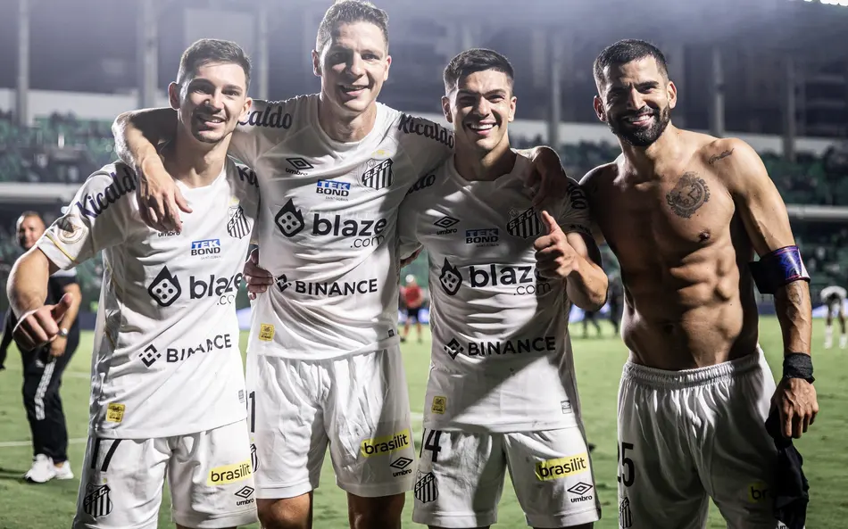

Pelé jogou no Santos e é considerado o Rei do Futebol.
O Santos foi fundado em 1912.
O time já venceu a Taça Libertadores e o Mundial.
Neymar começou a carreira no Santos.
O apelido do time é "Peixe".
Imagem do time

O Santos vive um novo momento com o retorno de Neymar.
A garra do elenco contagia os torcedores e mostra que o Peixe está mais vivo do que nunca.
Com jogadores dedicados e uma torcida apaixonada, o time busca novas conquistas.